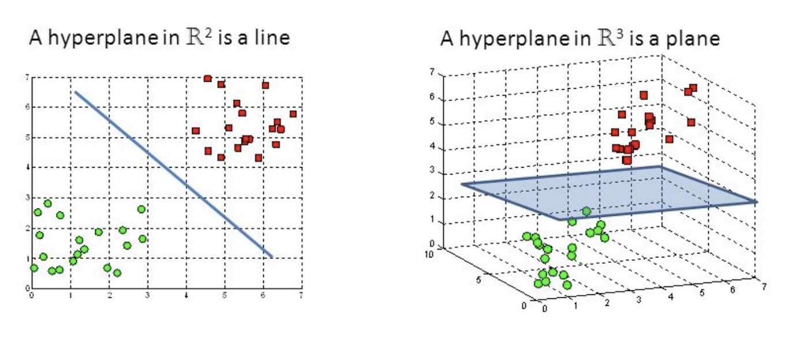

Capítulo 3 Machine Learning Supervisado
En este curso analizaremos distintos métodos de machine learning que permitirán predecir una respuesta numérica o categórica. Usaremos el lenguaje de programación R.
3.1 Support vector machine (SVM)
Support vector machine, llamadas SVM, son un algoritmo de aprendizaje supervisado que se puede utilizar para problemas de clasificación y regresión. Se utiliza para conjuntos de datos más pequeños, ya que tarda demasiado en procesarse.

3.1.1 Hiperplanos y vectores de soporte
Los hiperplanos son fronteras de decisión que ayudan a clasificar las observaciones de nuestros datos. La dimensión del hiperplano depende del número de variables con las que estemos trabajando. Si el número de variables de entrada es 2, entonces el hiperplano es solo una línea. Si el número de variables de entrada es 3, entonces el hiperplano se convierte en un plano bidimensional. Se vuelve difícil de imaginar cuando el número de variables supera las 3 dimensiones.
Los vectores de soporte son las observaciones que están más cerca del hiperplano e influyen en la posición y orientación del hiperplano. Usando estos vectores de soporte, maximizamos el margen del clasificador. Eliminar los vectores de soporte cambiará la posición del hiperplano. Estos son los puntos que nos ayudan a construir nuestro SVM.